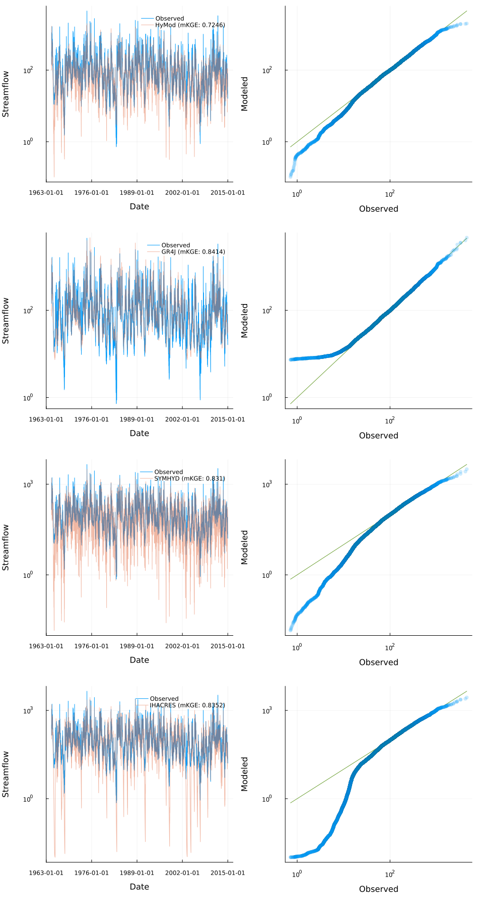

Model comparison example
This example showcases a comparison of models using multi-processing.
using Distributed, Plots, StatsPlots
N = 4
if nworkers() < N
addprocs(N, exeflags="--project=$(Base.active_project())")
end
@everywhere begin
using DataFrames, CSV
using Streamfall, BlackBoxOptim
HERE = @__DIR__
DATA_PATH = joinpath(HERE, "../test/data/cotter/")
# Load observations
date_format = "YYYY-mm-dd"
obs_data = DataFrame!(CSV.File(joinpath(DATA_PATH, "climate/CAMELS-AUS_410730.csv"),
comment="#",
dateformat=date_format))
hist_streamflow = obs_data[:, ["Date", "410730_Q"]]
climate_data = obs_data[:, ["Date", "410730_P", "410730_PET"]]
climate = Climate(climate_data, "_P", "_PET")
burn_in = 366 # 1 year burn-in period
# Create objective function to minimize (here we use Normalized KGE')
func = (obs, sim) -> 1.0 - Streamfall.NmKGE(obs[burn_in:end], sim[burn_in:end])
opt_func = (node) -> calibrate!(node, climate, hist_streamflow, func; MaxTime=180)
end
# Create individual nodes
hymod_node = create_node(SimpleHyModNode, "410730", 129.2)
gr4j_node = create_node(GR4JNode, "410730", 129.2)
symhyd_node = create_node(SYMHYDNode, "410730", 129.2)
ihacres_node = create_node(BilinearNode, "410730", 129.2)
# Calibrate each node separately using multiprocessing
node_names = ["HyMod", "GR4J", "SYMHYD", "IHACRES"]
node_list = [hymod_node, gr4j_node, symhyd_node, ihacres_node]
result = pmap(opt_func, node_list)
# Create comparison plot
Qo = hist_streamflow[:, "410730_Q"]
Qo_burn = Qo[burn_in:end]
res_plots = []
for ((res, opt), node, n_name) in zip(result, node_list, node_names)
update_params!(node, best_candidate(res)...)
reset!(node)
run_node!(node, climate)
node_burn = node.outflow[burn_in:end]
res_plot = quickplot(Qo, node, climate, n_name; burn_in=366)
push!(res_plots, res_plot)
end
combined_plot = plot(
[rplt for rplt in res_plots]...,
layout=(length(node_list),1),
size=(950,450*length(node_list)),
)
display(combined_plot)
# savefig("multi_model_comparison.png")